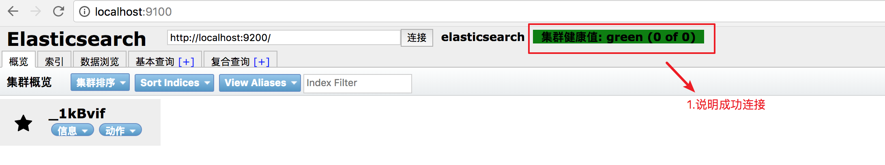

Mac如何安装elasticsearch
|ElasticSearch是一个基于Lucene的搜索服务器。它提供了一个分布式多用户能力的全文搜索引擎，基于RESTful web接口。
单独安装
elasticsearch官网下载地址：https://www.elastic.co/downloads/elasticsearch
$ wget https://artifacts.elastic.co/downloads/elasticsearch/elasticsearch-6.1.3.tar.gz
打开elasticsearch-6.1.3文件，然后启动elasticsearch服务
注意的是不支持java7，需要支持java8,可以通过java -version命令查看java的版本号
$ sh ./bin/elasticsearch
插件安装
git clone git://github.com/mobz/elasticsearch-head.git
cd elasticsearch-head
npm install
npm run start
打开http://localhost:9100/
要修改elasticsearch.yml文件
$ vim config/elasticsearch.yml
增加参数，属性会指定允许跨源 REST 请求
# 增加参数，使head插件可以访问es
http.cors.enabled: true
http.cors.allow-origin: "*"
重新启动elasticsearch服务
$ sh ./bin/elasticsearch
去看看是否正常连接
